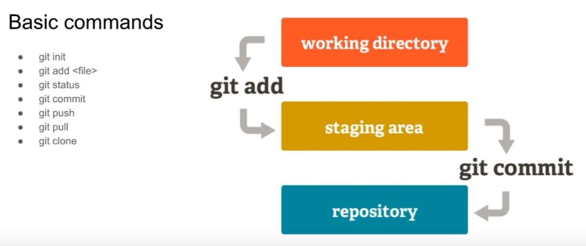

Git
Es un software de control de versiones diseñado por Linus Torvalds, pensando en la eficiencia, la confiabilidad y compatibilidad del mantenimiento de versiones de aplicaciones cuando éstas tienen un gran número de archivos de código fuente. Su propósito es llevar registro de los cambios en archivos de computadora incluyendo coordinar el trabajo que varias personas realizan sobre archivos compartidos en un repositorio de código.

- pwd =>Muestra en que directorio estamos
- ls =>Lista todos los directorios donde te ubicas
- git init =>Inicializas el git
- git status =>Ves el estado de los archivos
- git add index.html =>Agregar archivos al entorno de trabajo(stagiging area)
- git add . =>con el punto ya no necesitas poner el nombre ni extension del archivo, se guardaran todos los archivos
- git commit =>Crea un primer punto de control del codigo
- luego de Hacer un git commit poner un titulo y luego cerrar el archivo
- git commit -m "Mensaje para tu commit" De esta forma es mas directa el commit
- git config --list =>Permite ver la configuracion del git
- git config --user.name "BorisFlores"
- git config --user.email "borisfc23@gmail.com"
- git log =>sirve para ver todos los commit creados
- git restore =>Te permite descartar los cambios
- Cuando quieres ignorar archivos tienes que crear .gitignore y poner ahi los nombres de los archivos a ignorar y luego hacer un git add .gitignore
Si se quiere crear un proyecto paralelo o alternativo a este, sin alterar su codigo se debe de hacer lo siguiente:
- git branch =>Indica que proyecto estas usando, si dice master se refiere al actual
- git branch nombre_de_la_version_alternativa =>De esta forma creamos otra version del proyecto donde podemos agregarle nuevos archivos
- git checkout nombre_de_la_version_alternativa =>Cambiamos a la version alternativa